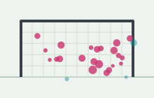
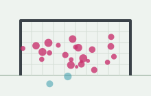
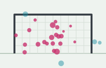
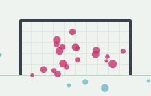
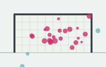

Publications
Peer-reviewed journal articles. An asterisk marks the corresponding author. Also on Google Scholar.
2026
-
 BDCC
BDCCTemporal Patterns of Advanced Shot-Quality Metrics in Elite Men's and Women's European Football
Big Data and Cognitive Computing, 10, 214, 2026
DOIBibTeX
@article{delacruz2026temporal, title = {Temporal Patterns of Advanced Shot-Quality Metrics in Elite Men's and Women's European Football}, author = {De-la-Cruz-Torres, Blanca and Ruiz-de-Alarcón-Quintero, Anselmo and Navarro-Castro, Miguel}, journal = {Big Data and Cognitive Computing}, volume = {10}, pages = {214}, year = {2026}, doi = {10.3390/bdcc10070214} } -

DataThe Role of Shot Velocity in Advanced Post-Shot Metrics: Evidence from the UEFA European Football Championships
Data, 11, 39, 2026
DOIBibTeX
@article{delacruz2026velocity, title = {The Role of Shot Velocity in Advanced Post-Shot Metrics: Evidence from the UEFA European Football Championships}, author = {De-la-Cruz-Torres, Blanca and Ruiz-de-Alarcón-Quintero, Anselmo and Navarro-Castro, Miguel}, journal = {Data}, volume = {11}, pages = {39}, year = {2026}, doi = {10.3390/data11020039} }
2025
-

DataExpected Shot Impact Timing (xSIT) and Other Advanced Metrics as Indicators of Performance in English Men's and Women's Professional Football
Data, 10(10), 159, 2025
DOIBibTeX
@article{delacruz2025xsitengland, title = {Expected Shot Impact Timing (xSIT) and Other Advanced Metrics as Indicators of Performance in English Men's and Women's Professional Football}, author = {De-la-Cruz-Torres, Blanca and Navarro-Castro, Miguel and Ruiz-de-Alarcón-Quintero, Anselmo}, journal = {Data}, volume = {10}, number = {10}, pages = {159}, year = {2025}, doi = {10.3390/data10100159} } -
 Appl. Sci.
Appl. Sci.Quantifying Football Shooting Precision: The Expected Shot Impact Timing (xSIT) Approach
Applied Sciences, 15(12), 6735, 2025
DOIBibTeX
@article{delacruz2025xsit, title = {Quantifying Football Shooting Precision: The Expected Shot Impact Timing (xSIT) Approach}, author = {De-la-Cruz-Torres, Blanca and Navarro-Castro, Miguel and Ruiz-de-Alarcón-Quintero, Anselmo}, journal = {Applied Sciences}, volume = {15}, number = {12}, pages = {6735}, year = {2025}, doi = {10.3390/app15126735} } -

BDCCAnalysis of Shots Trajectory and Effectiveness in Women's and Men's Football European Championship Matches
Big Data and Cognitive Computing, 9(6), 157, 2025
DOIBibTeX
@article{delacruz2025trajectory, title = {Analysis of Shots Trajectory and Effectiveness in Women's and Men's Football European Championship Matches}, author = {De-la-Cruz-Torres, Blanca and Navarro-Castro, Miguel and Ruiz-de-Alarcón-Quintero, Anselmo}, journal = {Big Data and Cognitive Computing}, volume = {9}, number = {6}, pages = {157}, year = {2025}, doi = {10.3390/bdcc9060157} } -

IJSSCThe Influence of Goalkeepers' Height on Soccer Performance: A Gender-Based Analysis
International Journal of Sports Science & Coaching, 20(2), 596–603, 2025
DOIBibTeX
@article{delacruz2025goalkeeper, title = {The Influence of Goalkeepers' Height on Soccer Performance: A Gender-Based Analysis}, author = {De-la-Cruz-Torres, Blanca and Navarro-Castro, Miguel and Ruiz-de-Alarcón-Quintero, Anselmo}, journal = {International Journal of Sports Science & Coaching}, volume = {20}, number = {2}, pages = {596--603}, year = {2025}, doi = {10.1177/17479541241310523} } -
 BDCC
BDCCAn Expected Goals On Target (xGOT) Model: Accounting for Goalkeeper Performance in Football
Big Data and Cognitive Computing, 9(3), 64, 2025
DOIBibTeX
@article{delacruz2025xgot, title = {An Expected Goals On Target (xGOT) Model: Accounting for Goalkeeper Performance in Football}, author = {De-la-Cruz-Torres, Blanca and Navarro-Castro, Miguel and Ruiz-de-Alarcón-Quintero, Anselmo}, journal = {Big Data and Cognitive Computing}, volume = {9}, number = {3}, pages = {64}, year = {2025}, doi = {10.3390/bdcc9030064} } -

Appl. Sci.Leveraging the Chain on Goals Model in Football: Applications for Attack and Defensive Play
Applied Sciences, 15(2), 998, 2025
DOIBibTeX
@article{delacruz2025chain, title = {Leveraging the Chain on Goals Model in Football: Applications for Attack and Defensive Play}, author = {De-la-Cruz-Torres, Blanca and Navarro-Castro, Miguel and Ruiz-de-Alarcón-Quintero, Anselmo}, journal = {Applied Sciences}, volume = {15}, number = {2}, pages = {998}, year = {2025}, doi = {10.3390/app15020998} }